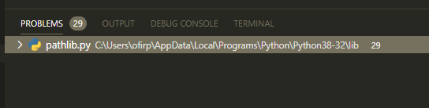

אני משתמש ב flake8 והוא מציג לי גם בעיות במודולים מובנים של פייתון. איך אפשר להגביל אותו להציג אך ורק בעיות בקוד הנוכחי ולהתעלם מבעיות במודולים שאני מייבא?
מקפיץ שוב את הנושא, האם מישהו יכול לעזור לי עם זה?
אשמח לפירוט כדי שאוכל להתייחס לשאלה ולעזור –
באיזה IDE אתה משתמש?
איך עשית אינטגרציה של flake8 ל־IDE?
איפה השגיאות מופיעות לך?
באיזו צורה?
אני משתמש ב VSCODE והגדרתי linter לאחר שהתקנתי עם pip install
כל פעם שאני מייבא הוא מבצע בדיקה גם על הקובץ המיובא כולל מודלים מובנים של פייתון:

כאן הוא מראה 29 בעיות ב pathlib, כשיש כמה מודולים זה הופך למאות התראות.
זה לא עוצר את ריצת הקוד אבל מפריע לי לראות ריכוז של הבעיות בקוד שלי ובכלל זה מיותר
ולא תורם לי בכלום המידע הזה.
הפיתרון שראיתי באינטרנט זה סינון לפי קודי שגיאה אבל לא רוצה לסנן אותן בקוד שלי:
ממש משונה, זה מעולם לא קרה לי.
בכ"מ, חיפשתי בגוגל Visual Studio Code Flake8 Settings ומצאתי את העמוד הזה שממליץ פשוט להכניס בהגדרות את ignorePatterns: [".vscode/*.py", "**/site-packages/**/*.py"]
על אותה דרך, תכניס לשם את C:\Users\ofirp\AppData\Local\Programs\Python\**\*.py
תודה רבה!
שיגע אותי…